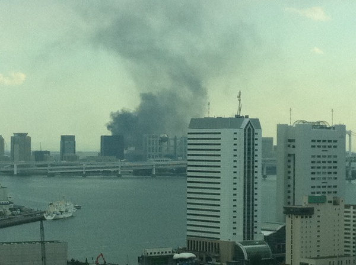

Twitter で2011年3月11日のことを振り返る
公開日：
酢酸先生が面白いことをやっていたので、自分もやってみた。
ちなみに、期間を限定したツイートの検索は、
from:daruyanagi since:2011-03-11 until:2011-03-12
みたいなクエリで行えるのだそうな（https://twitter.com/search?q=from%3Adaruyanagi%20since%3A2011-03-11%20until%3A2011-03-12&src=typd）。タイムゾーン周りがアレで、検索結果ではツイートの時刻がズレて見えるけど気にしない。
地震発生まで
「毛の少ないラインフェルト首相に対抗するには、毛の多い人物が必要だ」 / 社会民主党の新しい党首の決定 - スウェーデンの今 http://htn.to/ehRQQu
— だるやなぎ（エリス教に改宗） (@daruyanagi) 2011年3月11日
直前は仕事中にこんな記事を読んで遊んでいたらしい。そのあと地震があって、TV の前にみんな集まって「なんじゃこりゃ……」みたいな状態になっていた記憶がある。
避難＆帰宅
I'm at 東郷元帥記念公園 (東京都千代田区三番町18, Tokyo) http://4sq.com/fbdXJ6
— だるやなぎ（エリス教に改宗） (@daruyanagi) 2011年3月11日
東郷元帥記念公園まで避難。このときも余震がすごかった気がする。

フジテレビの方が燃えてるみたいなツイートに反応しているけど、それ以外は無事の連絡確認ぐらい。
避難解除なう＆帰宅命令
— だるやなぎ（エリス教に改宗） (@daruyanagi) 2011年3月11日
1時間待機後、帰宅命令。正直さっさと決めろと思っていたけれど、緊急時のルーチンがあったみたいだから従うべきだろう。
3時間9分で帰れる http://bit.ly/h9nOvM
— だるやなぎ（エリス教に改宗） (@daruyanagi) 2011年3月11日
4分後には歩いて帰る決断をしている。今まであんまり自覚していなかったけど、さっさと覚悟を決めてしまうタイプらしい。もしかしたらすでに Twitter で総武線が止まっているという情報を得ていたのかもしれない。
ちなみに、このころ住んでいたのは小岩。じつは住むところを選ぶときに「電車で30分ぐらいのところ≒イザとなれば現実的な時間で歩いて帰れる圏内」というのを一つの基準にしていたのが功を奏した。別にこういう事態を予想していたわけではないが……。
歩きで家に帰るなう。途中、アキバよってく。帰り道だし
— だるやなぎ（エリス教に改宗） (@daruyanagi) 2011年3月11日
ただし、交通インフラ以外は割りと楽観視していたみたいで、帰りにアキバによって遊ぶ or 買い物をするつもりだったらしい。
地震に雨に津波？ マジで踏んだり蹴ったりだな
— だるやなぎ（エリス教に改宗） (@daruyanagi) 2011年3月11日
依然、この程度の認識。津波のあとは火災が怖いんだなぁ、というのは後で知った。
靖国にお参りすっかなぁw
— だるやなぎ（エリス教に改宗） (@daruyanagi) 2011年3月11日
世の無常を感じて、ちょっと発心しかかっている。
九段下。消防がいっぱい
— だるやなぎ（エリス教に改宗） (@daruyanagi) 2011年3月11日
九段下会館では救急車両の終結を目撃。死傷者がでたということは後で知った。南無
神保町まできた。遠足みたいだ＼(^o^)／
— だるやなぎ（エリス教に改宗） (@daruyanagi) 2011年3月11日
個人的にはあんまり緊迫感がなく、みんなでゾロゾロあるいている非日常を楽しんでいたらしい。「東京タワーが曲がったらしい。押上タワーできるまで頑張れよ」とか、割とアホなことばかりつぶやいている。
電子広告、こういうときは災害情報にならんかな
— だるやなぎ（エリス教に改宗） (@daruyanagi) 2011年3月11日
一方、デマには慎重だったみたいだし、真面目なツイートもしている。たとえば、このアイデアはなかなかイケるかもしれん。――と一瞬思ったが、ネットワーク化が前提だし、機能させるのは難しいだろう。異常時に広域避難個所を示してくれるだけでも役に立つかもしれないので、今でも取り組む価値のあるアイデアじゃないかとは思うが。
道中で受けた支援
財布に500円しかなかったので補充 (@ ミニストップ 日本橋馬喰町2丁目店) http://4sq.com/gkQ3Kg
— だるやなぎ（エリス教に改宗） (@daruyanagi) 2011年3月11日
ビジネスホテルでトイレ借りる
— だるやなぎ（エリス教に改宗） (@daruyanagi) 2011年3月11日
おっちゃんと障碍者用トイレをシェアした（*ノノ） (@ 東横イン浅草橋交差点) http://4sq.com/etq0Ck
— だるやなぎ（エリス教に改宗） (@daruyanagi) 2011年3月11日
ついでにロビーでお茶のんでTV観てる
— だるやなぎ（エリス教に改宗） (@daruyanagi) 2011年3月11日
「東横イン浅草橋交差点」ではトイレが解放されていたので、利用させてもらった。長蛇の列ができていたので、大便器と小便器の両方を備えた障碍者用のトイレを独りで占有するなどという贅沢は許されない。おっちゃんとシェアしながら、「なんか大変なことになってますねぇ」という会話をしたのを覚えている。大便器に座った記憶はないので、おそらく自分が小便器を使っていやのだと思う。
本当はこのあたりで歩くのが面倒くさくなって、カネをだして泊まろうかと思ったのだけど、同じことを考える人は多いみたいで、その考えは早々に捨てた。そもそもお金500円しかもっていなかったし。
30分ほど休憩＆TV で情報収集してから出発。
福島第１原発に異常、放射能漏れの恐れ （読売新聞） - Yahoo!ニュース: http://bit.ly/goXJaI どうなんだろ
— だるやなぎ（エリス教に改宗） (@daruyanagi) 2011年3月11日
その10分後、原発事故の第一報を Twitter で入手。その時点では続報を待つという態度。
ちょうど本所のあたりを歩いていたみたいで、関東大震災で大勢の人がここで亡くなったことに思いを馳せ、昔よりは防災対策が進んでいるのではないかなどと考えていたらしい。
家族の安否確認
QK。さすがに家族の安否が心配になってきた (@ 東小松川公園(小松川境川親水公園内)) http://4sq.com/ijQatY
— だるやなぎ（エリス教に改宗） (@daruyanagi) 2011年3月11日
電話通じないなぁ こっちは電波MAX やっぱ控えておこう
— だるやなぎ（エリス教に改宗） (@daruyanagi) 2011年3月11日
日が暮れて暗くなった道を独りで歩いていることに、さすがの自分もちょっと不安になってきたのだろうか。地震発生から6時間後、緊急を優先して差し控えていた家族への電話連絡を初めて試みるが通じない。
とりあえず、東京はタダで自販機の中身をもらうほど切迫してないだろ
— だるやなぎ（エリス教に改宗） (@daruyanagi) 2011年3月11日
日本の交番制度最強
— だるやなぎ（エリス教に改宗） (@daruyanagi) 2011年3月11日
バスより歩いたほうがはええw
— だるやなぎ（エリス教に改宗） (@daruyanagi) 2011年3月11日
あいかわらずテキトーに思ったことをつぶやきながら、独りテケテケと千葉街道を東に進んだ。
小岩に到着＆居酒屋さんでご飯
I'm at 季節割烹 さか本 http://4sq.com/eJ7dMx
— だるやなぎ（エリス教に改宗） (@daruyanagi) 2011年3月11日
帰りしなに食材を買おうと思っていたが（それでお金をおろしたっていうのもある）、途中、コンビニがすっからかんになったのを目撃したりして、あっさりその考えは捨てたらしい。飲食店が開いているのは目にしていたので、当初は行きつけのインドカレー屋さんによることを目論んでいたのだが、閉まっていた（小岩はインド人が割と多い）。よく考えたら、海外の人にこの地震はショックだったろうと思う。しょうがないので、行ったことはないが気になっていた近所の居酒屋さんに寄った。ちなみにここは悪くない店なので、気軽に暖簾をくぐってみるとよい。引っ越ししちゃったのでそのあとのことはよくわからないが、まだあると思う。
落ち着こう。30分なんか聞いてない RT @tsunemitsu: 【避難指示】福島原発第1原発2号機の冷却水位低下により放射能漏れまであと残り予想時刻30分以内。非常事態宣言。近隣住民に原発から半径2km圏内住民に避難指示。ソースはフジテレビ。
— だるやなぎ（エリス教に改宗） (@daruyanagi) 2011年3月11日
神戸の時も、最初死者が増えるのをすげえ、いつもと違うコトが起こったと、なにかドキドキしてたんだけど、500超え、1000超えるとすごく怖くなっていった。またそういう感じを味わうとは思わんかったな
— だるやなぎ（エリス教に改宗） (@daruyanagi) 2011年3月11日
大将が TV を観れるようにしてくれたので、それを観ながらお刺身とビールで疲れを癒す。あとは、デマにケチをつけたり、神戸のときを思い出したり。
なんやかいや言うて、妹が役に立つ。ないす
— だるやなぎ（エリス教に改宗） (@daruyanagi) 2011年3月11日
ここでようやく妹と連絡がついたらしい。おそらくここで親や他の兄弟の安否も知ったらしく、妹の情報収集能力を高く評価しているようだ。
これで安心したせいか、その日の Twitter による情報収集はそこでやめてしまったらしい。
4時半までは意識を保っていたんだが…見ず知らずの人におごってもらってしまった
— だるやなぎ（エリス教に改宗） (@daruyanagi) 2011年3月11日
居酒屋さんで一緒になったおじさんと TV を観ながら意見を交わしているうちに、行きつけのクラブでおごってやるよという話になったようで、そのままハシゴした。しかも、大変失礼なことに、歩き疲れたせいか先に寝てしまったよう。4時にママさんのひざのうえで目を覚ました時には、おじさんはすでにお会計を済ませ、去った後だった。